Last updated: 2026-02-16
Checks: 7 0
Knit directory: MT_LMS/
This reproducible R Markdown analysis was created with workflowr (version 1.7.2). The Checks tab describes the reproducibility checks that were applied when the results were created. The Past versions tab lists the development history.
Great! Since the R Markdown file has been committed to the Git repository, you know the exact version of the code that produced these results.
Great job! The global environment was empty. Objects defined in the global environment can affect the analysis in your R Markdown file in unknown ways. For reproduciblity it’s best to always run the code in an empty environment.
The command set.seed(20260113) was run prior to running
the code in the R Markdown file. Setting a seed ensures that any results
that rely on randomness, e.g. subsampling or permutations, are
reproducible.
Great job! Recording the operating system, R version, and package versions is critical for reproducibility.
Nice! There were no cached chunks for this analysis, so you can be confident that you successfully produced the results during this run.
Great job! Using relative paths to the files within your workflowr project makes it easier to run your code on other machines.
Great! You are using Git for version control. Tracking code development and connecting the code version to the results is critical for reproducibility.
The results in this page were generated with repository version 51f948b. See the Past versions tab to see a history of the changes made to the R Markdown and HTML files.
Note that you need to be careful to ensure that all relevant files for
the analysis have been committed to Git prior to generating the results
(you can use wflow_publish or
wflow_git_commit). workflowr only checks the R Markdown
file, but you know if there are other scripts or data files that it
depends on. Below is the status of the Git repository when the results
were generated:
Ignored files:
Ignored: .Rproj.user/
Ignored: analysis/figure/
Untracked files:
Untracked: analysis/QC_integration_annotation.Rmd
Untracked: analysis/omnipathr-log/
Untracked: data/Cellbender_output/
Untracked: data/Cellranger_output/
Untracked: omnipathr-log/
Untracked: output/MT_QC_integration_annotation/
Untracked: output/QC_integration_annotation/
Untracked: renv.lock
Untracked: renv/
Unstaged changes:
Modified: .Rprofile
Note that any generated files, e.g. HTML, png, CSS, etc., are not included in this status report because it is ok for generated content to have uncommitted changes.
These are the previous versions of the repository in which changes were
made to the R Markdown
(analysis/MT_QC_integration_annotation.Rmd) and HTML
(docs/MT_QC_integration_annotation.html) files. If you’ve
configured a remote Git repository (see ?wflow_git_remote),
click on the hyperlinks in the table below to view the files as they
were in that past version.
| File | Version | Author | Date | Message |
|---|---|---|---|---|
| Rmd | 51f948b | GinoBonazza | 2026-02-16 | wflow_publish("analysis/MT_QC_integration_annotation.Rmd") |
Setup
# Get current file name to make folder
current_file <- "MT_QC_integration_annotation"
# Load libraries
library(here)
library(dplyr)
library(ggplot2)
library(tibble)
library(readr)
library(readxl)
library(knitr)
library(patchwork)
library(scales)
library(clusterProfiler)
library(org.Hs.eg.db)
library(enrichplot)
library(Seurat)
library(DropletUtils)
library(Matrix)
library(scDblFinder)
library(scCustomize)
library(magrittr)
library(tidyverse)
library(reshape2)
library(S4Vectors)
library(SingleCellExperiment)
library(pheatmap)
library(png)
library(gridExtra)
library(Matrix.utils)
library(scater)
library(statmod)
library(clustree)
library(harmony)
library(gprofiler2)
library(AnnotationHub)
library(ReactomePA)
library(speckle)
library(limma)
library(reactable)
library(decoupleR)
library(OmnipathR)
library(dorothea)
library(edgeR)
#Output paths
output_dir_data <- here::here("output", current_file)
if (!dir.exists(output_dir_data)) dir.create(output_dir_data)
if (!dir.exists(here::here("docs", "figure"))) dir.create(here::here("docs", "figure"))
output_dir_figs <- here::here("docs", "figure", paste0(current_file, ".Rmd"))
if (!dir.exists(output_dir_figs)) dir.create(output_dir_figs)Quality Control
Load and merge cellbender and cellranger output
cell_bender_merged <- Read_CellBender_h5_Multi_File(merge = TRUE,
data_dir = here::here("data", "Cellbender_output"),
custom_name = "_filtered.h5",
sample_list = c("cellbender_output_Exp1_CMHEF_NC",
"cellbender_output_Exp1_CMHEF_TGF"
),
sample_names = c("Exp1_CMHEF_NC",
"Exp1_CMHEF_TGF")
)
cell_ranger_merged <- Read10X_h5_GEO(merge = TRUE,
data_dir = here::here("data", "Cellranger_output"),
shared_suffix = "_filtered_feature_bc_matrix.h5",
sample_list = c("Exp1_CMHEF_NC",
"Exp1_CMHEF_TGF"),
sample_names = c("Exp1_CMHEF_NC",
"Exp1_CMHEF_TGF")
)
preQC <- Create_CellBender_Merged_Seurat(raw_cell_bender_matrix = cell_bender_merged,
raw_counts_matrix = cell_ranger_merged,
raw_assay_name = "RAW",
cell_bender_assay_name = "RNA")
rm(cell_bender_merged, cell_ranger_merged)Add metadata: percentage of mitochondrial and ribosomal genes, clinical data
cn <- Cells(preQC)
preQC$Sample <- dplyr::case_when(
grepl("^Exp1_CMHEF_NC[_-]", cn) ~ "Exp1_CMHEF_NC",
grepl("^Exp1_CMHEF_TGF[_-]", cn) ~ "Exp1_CMHEF_TGF",
TRUE ~ NA_character_
)
table(preQC$Sample, useNA = "ifany")
Exp1_CMHEF_NC Exp1_CMHEF_TGF
587 1086 preQC[["percent.mt"]] <- PercentageFeatureSet(preQC, pattern = "^MT-")
preQC[["percent.rp"]] <- PercentageFeatureSet(preQC, pattern = "^RP[SL]")Check how much Cellbender has affected the dataset
table(preQC$Sample)
Exp1_CMHEF_NC Exp1_CMHEF_TGF
587 1086 preQC <- Add_CellBender_Diff(seurat_object = preQC,
raw_assay_name = "RAW",
cell_bender_assay_name = "RNA")
median_stats <- Median_Stats(seurat_object = preQC,
group_by_var = "orig.ident",
median_var = c("nCount_Diff", "nFeature_Diff"))
median_stats# A tibble: 2 × 5
orig.ident Median_nCount_RNA Median_nFeature_RNA Median_nCount_Diff
<fct> <dbl> <int> <dbl>
1 Exp1 21726 5254 202
2 Totals (All Cells) 21726 5254 202
# ℹ 1 more variable: Median_nFeature_Diff <int>feature_diff <- CellBender_Feature_Diff(seurat_object = preQC,
raw_assay = "RAW",
cell_bender_assay = "RNA")
head(feature_diff) Raw_Counts CellBender_Counts Count_Diff Pct_Diff
CXCL1 19 7 12 63.15789
S100A1 16 6 10 62.50000
CXCL6 16 7 9 56.25000
CXCL8 20 10 10 50.00000
ENSG00000287999 90 47 43 47.77778
CXCL5 13 7 6 46.15385CellBender_Diff_Plot(feature_diff_df = feature_diff)
Check quality control parameters
p1 <- VlnPlot(preQC, features = "nCount_RNA", group.by = "Sample", pt.size = 0) + theme(axis.title.x = element_blank()) + NoLegend()
p2 <- VlnPlot(preQC, features = "nFeature_RNA", group.by = "Sample", pt.size = 0) + theme(axis.title.x = element_blank()) + NoLegend()
p3 <- VlnPlot(preQC, features = "percent.mt", group.by = "Sample", pt.size = 0) + theme(axis.title.x = element_blank()) + NoLegend()
p4 <- VlnPlot(preQC, features = "percent.rp", group.by = "Sample", pt.size = 0) + theme(axis.title.x = element_blank()) + NoLegend()
QC_pre_VlnPlots <- p1 + p2 + p3 + p4 + plot_layout(ncol = 2)
QC_pre_VlnPlots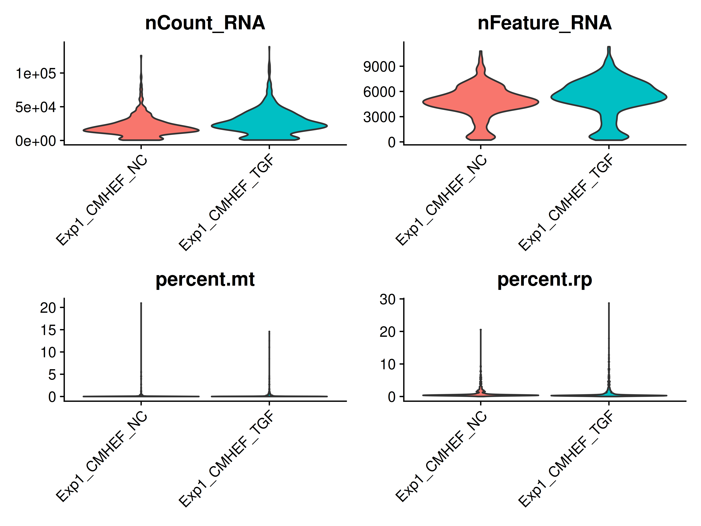
p1 <- VlnPlot(preQC, features = "nCount_RNA", group.by = "Sample", pt.size = 0, y.max = 10000) + theme(axis.title.x = element_blank()) + NoLegend()
p2 <- VlnPlot(preQC, features = "nFeature_RNA", group.by = "Sample", pt.size = 0, y.max = 6000) + theme(axis.title.x = element_blank()) + NoLegend()
p3 <- VlnPlot(preQC, features = "percent.mt", group.by = "Sample", pt.size = 0, y.max = 25) + theme(axis.title.x = element_blank()) + NoLegend()
p4 <- VlnPlot(preQC, features = "percent.rp", group.by = "Sample", pt.size = 0, y.max = 20) + theme(axis.title.x = element_blank()) + NoLegend()
QC_pre_VlnPlots_zoom <- p1 + p2 + p3 + p4 + plot_layout(ncol = 2)
QC_pre_VlnPlots_zoom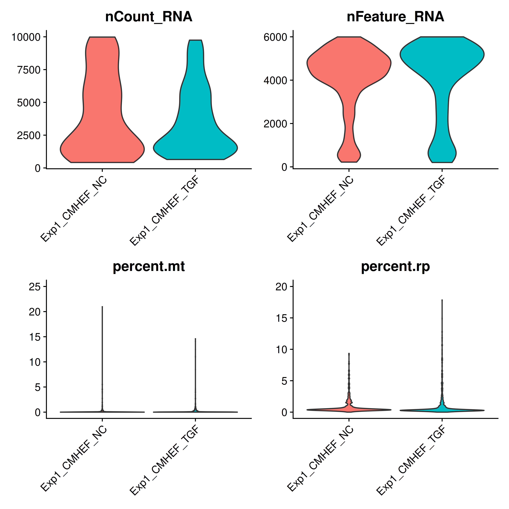
Doublets detection
preQC_sce <- as.SingleCellExperiment(preQC)
preQC_sce <- scDblFinder(preQC_sce, samples="Sample", clusters = TRUE) | | | 0% | |=================================== | 50% | |======================================================================| 100%table(preQC_sce@colData$scDblFinder.class)
singlet doublet
1596 77 preQC <- as.Seurat(preQC_sce, counts = "counts", data = "logcounts")
rm(preQC_sce)
preQC@meta.data[preQC@meta.data$scDblFinder.class %in% "singlet", "scDblFinder.n"] = paste0("Singlets (n=", table(preQC$scDblFinder.class)[1], ")")
preQC@meta.data[preQC@meta.data$scDblFinder.class %in% "doublet", "scDblFinder.n"] = paste0("Doublets (n=", table(preQC$scDblFinder.class)[2], ")")
preQC$scDblFinder.n <- factor(x = preQC$scDblFinder.n, levels = c(rownames(table(preQC$scDblFinder.n))[2], rownames(table(preQC$scDblFinder.n))[1])) p1 <- VlnPlot(preQC, features = c("nCount_RNA"), split.by = "scDblFinder.n", group.by = "Sample", pt.size = 0, y.max = 50000) + theme(axis.title.x = element_blank()) + NoLegend()
p2 <- VlnPlot(preQC, features = c("nFeature_RNA"), split.by = "scDblFinder.n", group.by = "Sample", pt.size = 0, y.max = 10000) + theme(axis.title.x = element_blank())
QC_pre_Doublets <- p1 + p2 + plot_layout(ncol = 2)
QC_pre_Doublets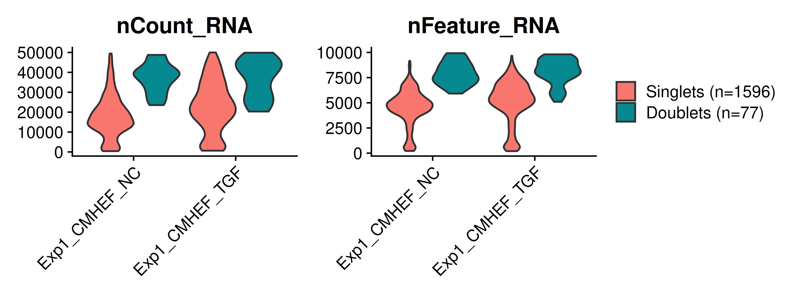
saveRDS(preQC,
here::here(output_dir_data, "MT_preQC.rds"))Remove doublets
preQC_no_doublets <- subset(x = preQC, subset = scDblFinder.class == "singlet")
table(preQC_no_doublets@meta.data$scDblFinder.class)
singlet doublet
1596 0 rm(preQC)Check quality control parameters after removing doublets
p1 <- VlnPlot(preQC_no_doublets, features = "nCount_RNA", group.by = "Sample", pt.size = 0) + theme(axis.title.x = element_blank()) + NoLegend()
p2 <- VlnPlot(preQC_no_doublets, features = "nFeature_RNA", group.by = "Sample", pt.size = 0) + theme(axis.title.x = element_blank()) + NoLegend()
p3 <- VlnPlot(preQC_no_doublets, features = "percent.mt", group.by = "Sample", pt.size = 0) + theme(axis.title.x = element_blank()) + NoLegend()
p4 <- VlnPlot(preQC_no_doublets, features = "percent.rp", group.by = "Sample", pt.size = 0) + theme(axis.title.x = element_blank()) + NoLegend()
QC_pre_no_doublets_VlnPlots <- p1 + p2 + p3 + p4 + plot_layout(ncol = 2)
QC_pre_no_doublets_VlnPlotsp1 <- VlnPlot(preQC_no_doublets, features = "nCount_RNA", group.by = "Sample", pt.size = 0, y.max = 10000) + theme(axis.title.x = element_blank()) + NoLegend()
p2 <- VlnPlot(preQC_no_doublets, features = "nFeature_RNA", group.by = "Sample", pt.size = 0, y.max = 6000) + theme(axis.title.x = element_blank()) + NoLegend()
p3 <- VlnPlot(preQC_no_doublets, features = "percent.mt", group.by = "Sample", pt.size = 0, y.max = 25) + theme(axis.title.x = element_blank()) + NoLegend()
p4 <- VlnPlot(preQC_no_doublets, features = "percent.rp", group.by = "Sample", pt.size = 0, y.max = 20) + theme(axis.title.x = element_blank()) + NoLegend()
QC_pre_no_doublets_VlnPlots_zoom <- p1 + p2 + p3 + p4 + plot_layout(ncol = 2)
QC_pre_no_doublets_VlnPlots_zoom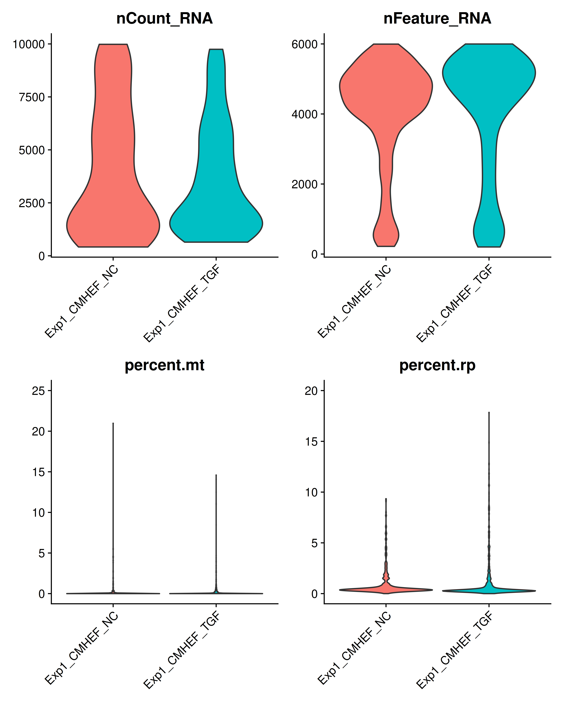
Filter based on number of counts, features and percentage of mitochondrial genes
postQC <- subset(preQC_no_doublets, subset =
nFeature_RNA > 300 &
percent.mt < 20 &
nCount_RNA > 500)
table(postQC$Sample)
Exp1_CMHEF_NC Exp1_CMHEF_TGF
551 1024 Check quality control parameters
p1 <- VlnPlot(postQC, features = "nCount_RNA", group.by = "Sample", pt.size = 0) + theme(axis.title.x = element_blank()) + NoLegend()
p2 <- VlnPlot(postQC, features = "nFeature_RNA", group.by = "Sample", pt.size = 0) + theme(axis.title.x = element_blank()) + NoLegend()
p3 <- VlnPlot(postQC, features = "percent.mt", group.by = "Sample", pt.size = 0) + theme(axis.title.x = element_blank()) + NoLegend()
p4 <- VlnPlot(postQC, features = "percent.rp", group.by = "Sample", pt.size = 0) + theme(axis.title.x = element_blank()) + NoLegend()
QC_post_VlnPlots <- p1 + p2 + p3 + p4 + plot_layout(ncol = 2)
QC_post_VlnPlots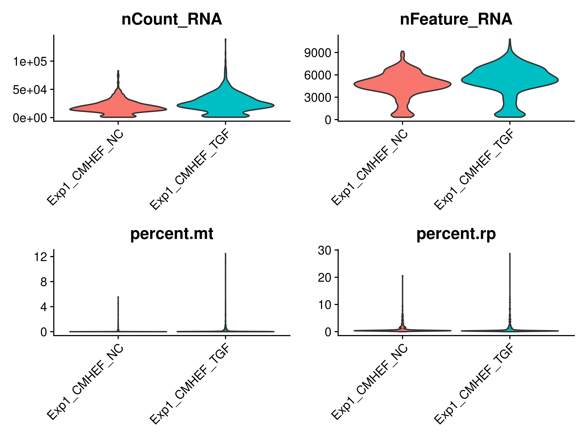
p1 <- VlnPlot(postQC, features = "nCount_RNA", group.by = "Sample", pt.size = 0, y.max = 10000) + theme(axis.title.x = element_blank()) + NoLegend()
p2 <- VlnPlot(postQC, features = "nFeature_RNA", group.by = "Sample", pt.size = 0, y.max = 6000) + theme(axis.title.x = element_blank()) + NoLegend()
p3 <- VlnPlot(postQC, features = "percent.mt", group.by = "Sample", pt.size = 0, y.max = 25) + theme(axis.title.x = element_blank()) + NoLegend()
p4 <- VlnPlot(postQC, features = "percent.rp", group.by = "Sample", pt.size = 0, y.max = 20) + theme(axis.title.x = element_blank()) + NoLegend()
QC_post_VlnPlots_zoom <- p1 + p2 + p3 + p4 + plot_layout(ncol = 2)
QC_post_VlnPlots_zoom
Integration and clustering
Normalization and scaling using SCTransform.
DefaultAssay(postQC) <- "RNA"
postQC <- SplitObject(postQC, split.by = "Sample")
for (i in 1:length(postQC)) {
postQC[[i]] <- SCTransform(postQC[[i]],
vst.flavor = "v2",
vars.to.regress = c("percent.mt"),
return.only.var.genes = TRUE,
method = "glmGamPoi")
} | | | 0% | |================== | 25% | |=================================== | 50% | |==================================================== | 75% | |======================================================================| 100% | | | 0% | |== | 2% | |==== | 5% | |===== | 8% | |======= | 10% | |========= | 12% | |========== | 15% | |============ | 18% | |============== | 20% | |================ | 22% | |================== | 25% | |=================== | 28% | |===================== | 30% | |======================= | 32% | |======================== | 35% | |========================== | 38% | |============================ | 40% | |============================== | 42% | |================================ | 45% | |================================= | 48% | |=================================== | 50% | |===================================== | 52% | |====================================== | 55% | |======================================== | 58% | |========================================== | 60% | |============================================ | 62% | |============================================== | 65% | |=============================================== | 68% | |================================================= | 70% | |=================================================== | 72% | |==================================================== | 75% | |====================================================== | 78% | |======================================================== | 80% | |========================================================== | 82% | |============================================================ | 85% | |============================================================= | 88% | |=============================================================== | 90% | |================================================================= | 92% | |================================================================== | 95% | |==================================================================== | 98% | |======================================================================| 100% | | | 0% | |== | 2% | |==== | 5% | |===== | 8% | |======= | 10% | |========= | 12% | |========== | 15% | |============ | 18% | |============== | 20% | |================ | 22% | |================== | 25% | |=================== | 28% | |===================== | 30% | |======================= | 32% | |======================== | 35% | |========================== | 38% | |============================ | 40% | |============================== | 42% | |================================ | 45% | |================================= | 48% | |=================================== | 50% | |===================================== | 52% | |====================================== | 55% | |======================================== | 58% | |========================================== | 60% | |============================================ | 62% | |============================================== | 65% | |=============================================== | 68% | |================================================= | 70% | |=================================================== | 72% | |==================================================== | 75% | |====================================================== | 78% | |======================================================== | 80% | |========================================================== | 82% | |============================================================ | 85% | |============================================================= | 88% | |=============================================================== | 90% | |================================================================= | 92% | |================================================================== | 95% | |==================================================================== | 98% | |======================================================================| 100% | | | 0% | |================== | 25% | |=================================== | 50% | |==================================================== | 75% | |======================================================================| 100% | | | 0% | |== | 2% | |=== | 4% | |===== | 7% | |====== | 9% | |======== | 11% | |========= | 13% | |=========== | 15% | |============ | 17% | |============== | 20% | |=============== | 22% | |================= | 24% | |================== | 26% | |==================== | 28% | |===================== | 30% | |======================= | 33% | |======================== | 35% | |========================== | 37% | |=========================== | 39% | |============================= | 41% | |============================== | 43% | |================================ | 46% | |================================= | 48% | |=================================== | 50% | |===================================== | 52% | |====================================== | 54% | |======================================== | 57% | |========================================= | 59% | |=========================================== | 61% | |============================================ | 63% | |============================================== | 65% | |=============================================== | 67% | |================================================= | 70% | |================================================== | 72% | |==================================================== | 74% | |===================================================== | 76% | |======================================================= | 78% | |======================================================== | 80% | |========================================================== | 83% | |=========================================================== | 85% | |============================================================= | 87% | |============================================================== | 89% | |================================================================ | 91% | |================================================================= | 93% | |=================================================================== | 96% | |==================================================================== | 98% | |======================================================================| 100% | | | 0% | |== | 2% | |=== | 4% | |===== | 7% | |====== | 9% | |======== | 11% | |========= | 13% | |=========== | 15% | |============ | 17% | |============== | 20% | |=============== | 22% | |================= | 24% | |================== | 26% | |==================== | 28% | |===================== | 30% | |======================= | 33% | |======================== | 35% | |========================== | 37% | |=========================== | 39% | |============================= | 41% | |============================== | 43% | |================================ | 46% | |================================= | 48% | |=================================== | 50% | |===================================== | 52% | |====================================== | 54% | |======================================== | 57% | |========================================= | 59% | |=========================================== | 61% | |============================================ | 63% | |============================================== | 65% | |=============================================== | 67% | |================================================= | 70% | |================================================== | 72% | |==================================================== | 74% | |===================================================== | 76% | |======================================================= | 78% | |======================================================== | 80% | |========================================================== | 83% | |=========================================================== | 85% | |============================================================= | 87% | |============================================================== | 89% | |================================================================ | 91% | |================================================================= | 93% | |=================================================================== | 96% | |==================================================================== | 98% | |======================================================================| 100%PCA without integration
features <- SelectIntegrationFeatures(object.list = postQC, nfeatures = 2000)
not_integrated <- Merge_Seurat_List(postQC)
VariableFeatures(not_integrated) <- features
not_integrated <- RunPCA(not_integrated)saveRDS(not_integrated,
here::here(output_dir_data, "MT_not_integrated.rds"))not_integrated <- readRDS(here::here(output_dir_data, "MT_not_integrated.rds"))ElbowPlot(not_integrated, ndims = 50)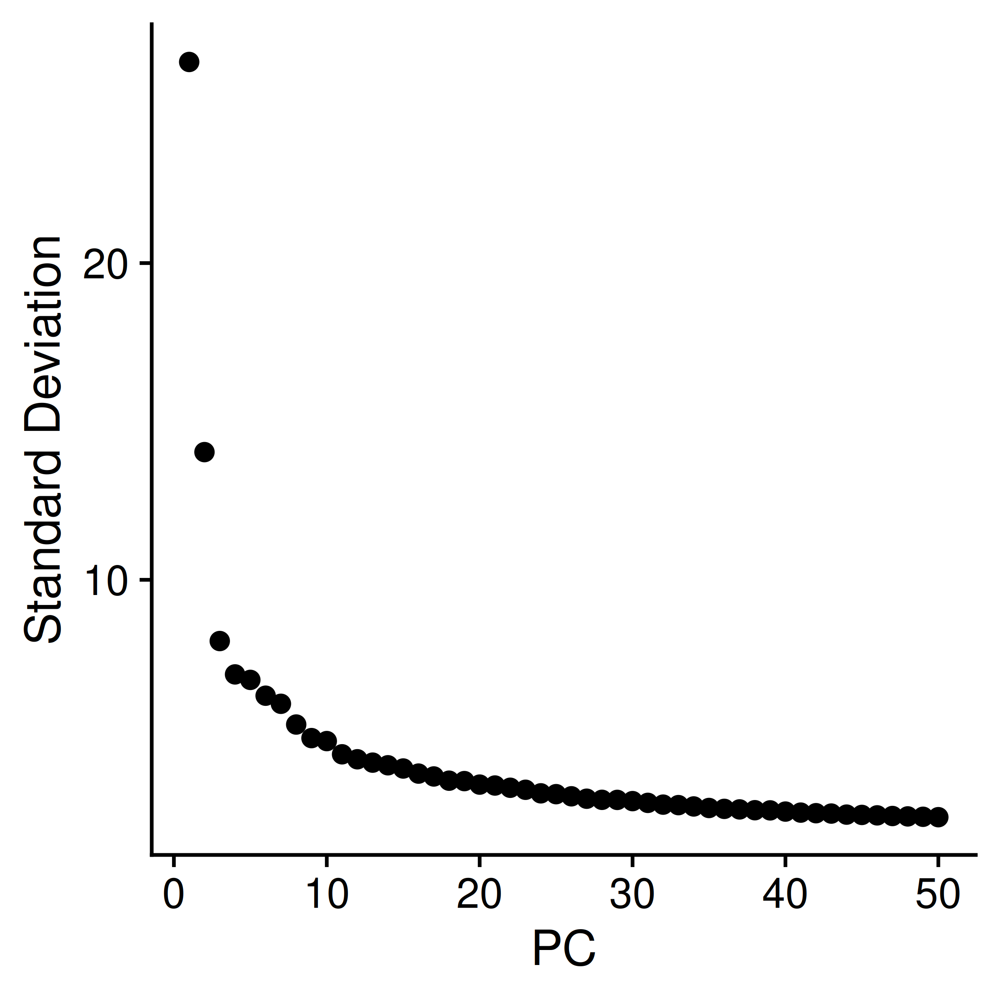
Clustering without integration
not_integrated <- RunUMAP(not_integrated, dims = 1:30)
not_integrated <- FindNeighbors(not_integrated, dims = 1:30)
not_integrated <- FindClusters(not_integrated, resolution = seq(0.1, 0.8, by=0.1))clustree::clustree(not_integrated@meta.data[,grep("SCT_snn_res", colnames(not_integrated@meta.data))],
prefix = "SCT_snn_res.")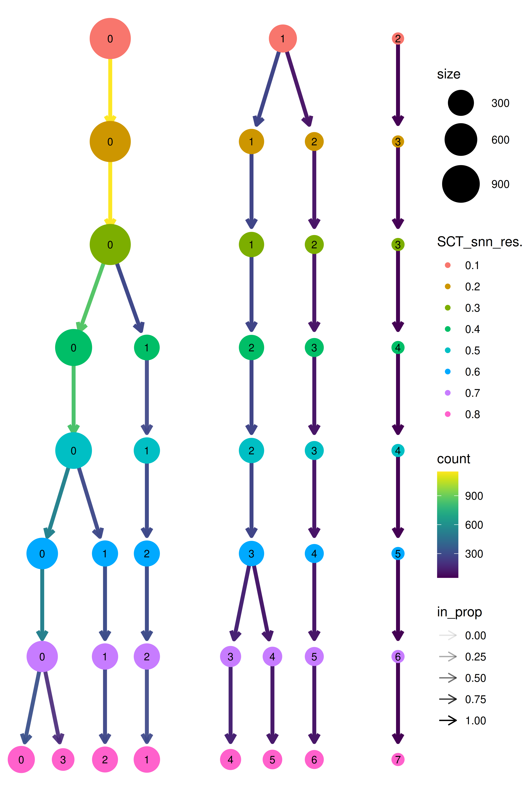
DimPlot(not_integrated, reduction = "umap", shuffle = T,
group.by = c("SCT_snn_res.0.2", "SCT_snn_res.0.3", "SCT_snn_res.0.4", "Sample"), ncol = 2)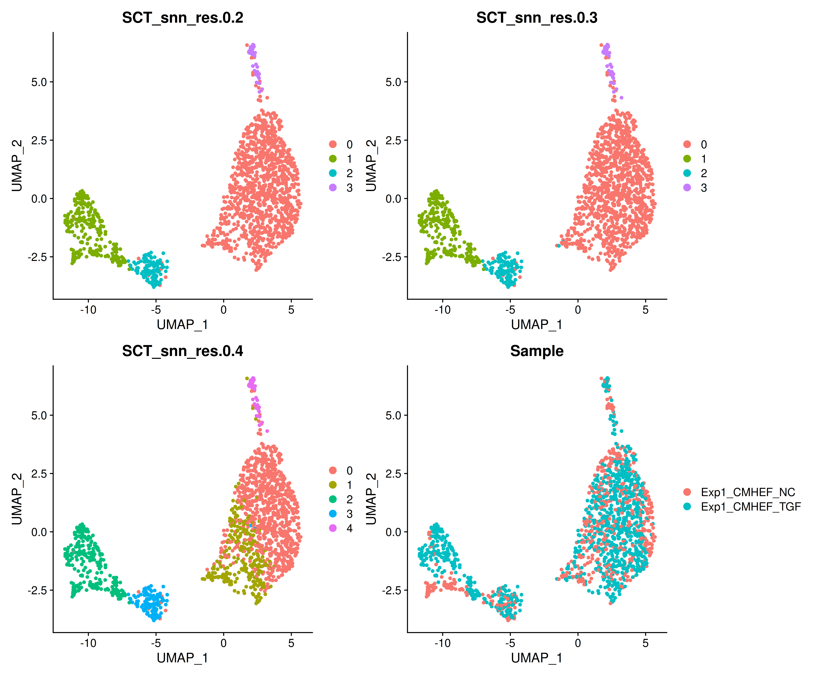
saveRDS(not_integrated,
here::here(output_dir_data, "MT_not_integrated.rds"))Integrate the samples
integrated <- RunHarmony(not_integrated,
assay.use="SCT",
group.by.vars = "Sample",
dims.use = 1:30,
plot_convergence=TRUE,
.options = harmony_options(
max.iter.cluster = 100,
)
)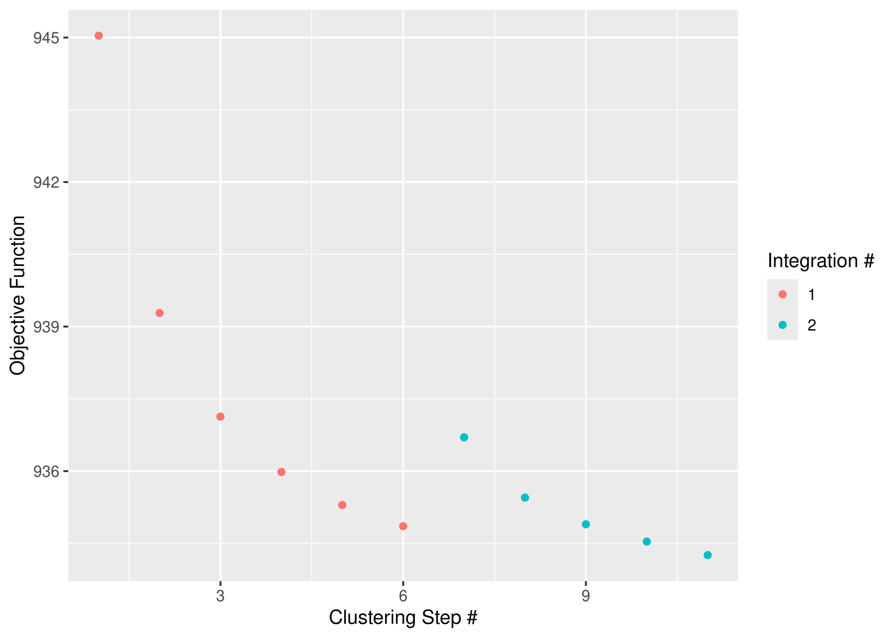
saveRDS(integrated,
here::here(output_dir_data, "MT.rds"))integrated <- readRDS(here::here(output_dir_data, "MT.rds"))Clustering after integration
integrated <- RunUMAP(integrated, dims = 1:30, reduction = "harmony")
integrated <- FindNeighbors(integrated, dims = 1:30, reduction = "harmony")
integrated <- FindClusters(integrated, resolution = seq(0.1, 0.8, by=0.1))clustree::clustree(integrated@meta.data[,grep("SCT_snn_res", colnames(integrated@meta.data))],
prefix = "SCT_snn_res.")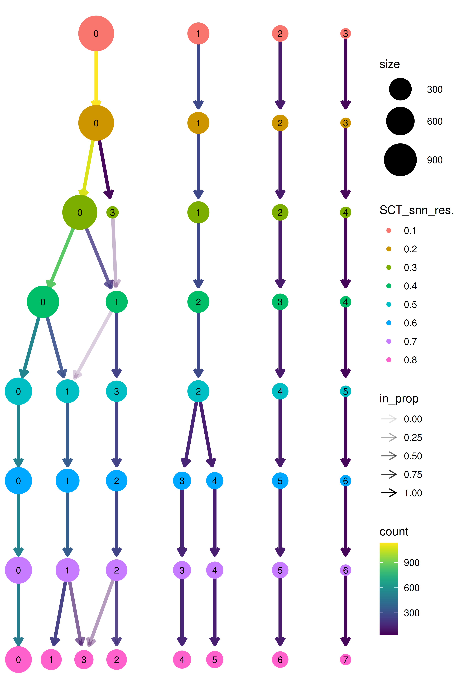
DimPlot(integrated, reduction = "umap", shuffle = T,
group.by = c("SCT_snn_res.0.2", "SCT_snn_res.0.3", "SCT_snn_res.0.4", "Sample"), ncol = 2)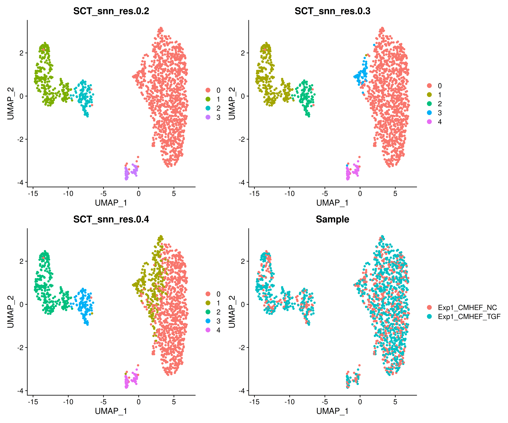
Find the markers that characterize each cell population
DefaultAssay(integrated) <- "RNA"
integrated <- NormalizeData(integrated)
Idents(integrated) <- "SCT_snn_res.0.2"
Markers <- FindAllMarkers(integrated, only.pos = TRUE, min.pct = 0.5, logfc.threshold = 0.5)
write.csv(Markers, here::here(output_dir_data, "MT_Markers_all.csv"))
Markers_top10 <- as.data.frame(Markers %>% group_by(cluster) %>% top_n(n = 10, wt = avg_log2FC))
write.csv(Markers_top10, here::here(output_dir_data, "MT_Markers_top10.csv"))
Markers_top3 <- as.data.frame(Markers %>% group_by(cluster) %>% top_n(n = 3, wt = avg_log2FC))
write.csv(Markers_top3, here::here(output_dir_data, "MT_Markers_top3.csv"))Check QC parameters in each cluster
VlnPlot(integrated, features = c("nCount_RNA", "nFeature_RNA", "percent.mt", "percent.rp"), ncol = 2) + theme(axis.title.x = element_blank())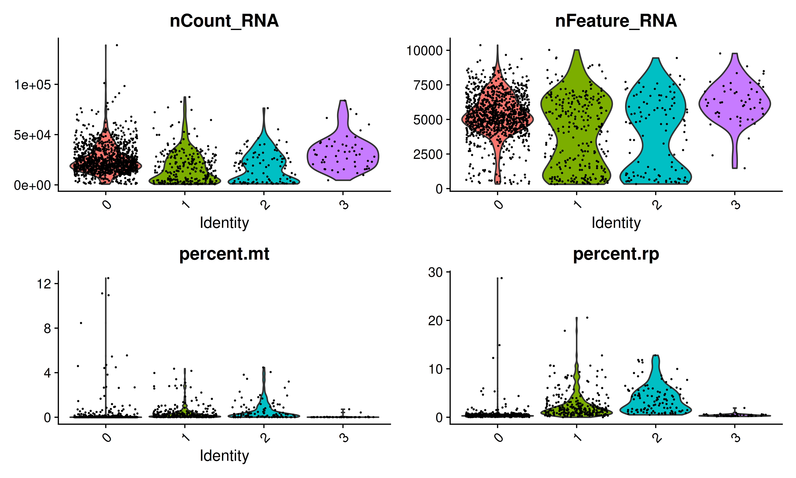
Check cell cycle genes
DefaultAssay(integrated) <- "RNA"
s.genes <- cc.genes$s.genes
g2m.genes <- cc.genes$g2m.genes
integrated <- CellCycleScoring(integrated, s.features = s.genes, g2m.features = g2m.genes)
DimPlot(integrated, reduction = "umap", shuffle = T,
group.by = "Phase")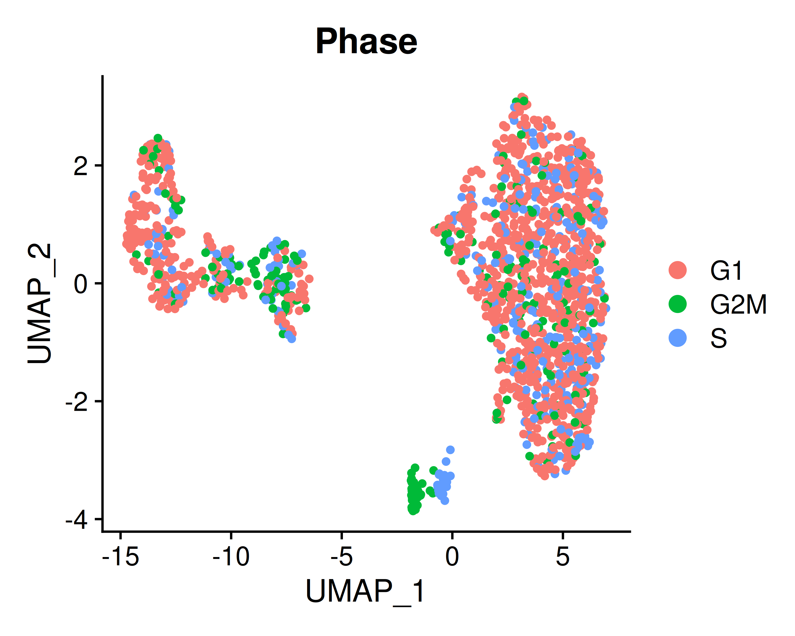
Cell type annotation
Annotate the clusters based on the characteristic markers
integrated@meta.data[integrated@meta.data$SCT_snn_res.0.2 %in% c("0"), "cell_type"] = "Cardiomyocytes I"
integrated@meta.data[integrated@meta.data$SCT_snn_res.0.2 %in% c("1"), "cell_type"] = "Fibroblasts"
integrated@meta.data[integrated@meta.data$SCT_snn_res.0.2 %in% c("2"), "cell_type"] = "Cardiomyocytes II"
integrated@meta.data[integrated@meta.data$SCT_snn_res.0.2 %in% c("3"), "cell_type"] = "Proliferating cells"
integrated$cell_type <- factor(integrated$cell_type, levels = c("Cardiomyocytes I",
"Fibroblasts",
"Cardiomyocytes II",
"Proliferating cells"))
Idents(integrated) <- integrated$cell_typeintegrated <- ScaleData(integrated)
mapal <- colorRampPalette(RColorBrewer::brewer.pal(9,"RdBu"))(256)
mapal <- rev(mapal[1:256])
cluster_palette <- c("#F8766D","#24B700", "#00ACFC", "#D575FE")
Heatmap <- DoHeatmap(integrated, draw.line = F, features = Markers_top10$gene, group.colors = cluster_palette) +
guides(colour=FALSE) +
scale_fill_gradientn(colours = mapal) +
theme(text = element_text(size = 15), axis.text.y = element_text(size = 8)) +
theme(plot.margin = unit(c(0.1, 0, 0, 0),
"inches"))
Heatmap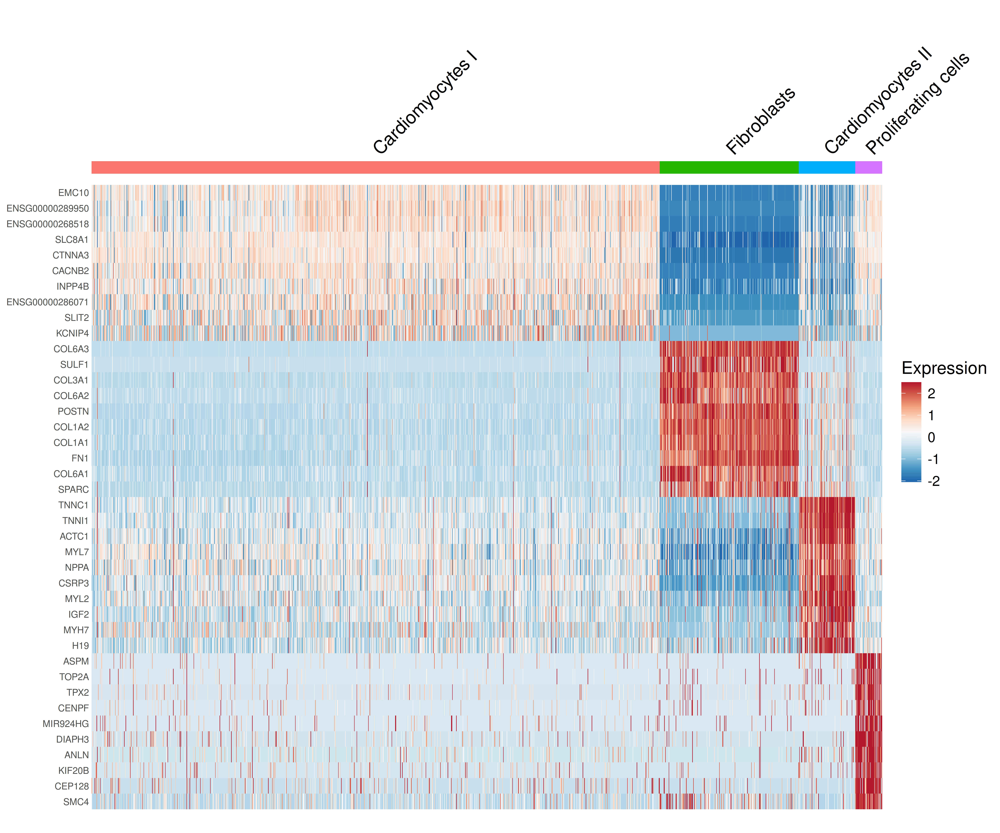
p <- DimPlot(integrated, group.by = "cell_type", reduction = "umap", label = F, cols = cluster_palette) +
NoLegend() +
theme(axis.text=element_text(size=14, face = "bold"), axis.title = element_text(size = 18, face = "bold")) +
theme(plot.title = element_blank())
LabelClusters(p, id = "cell_type", fontface = "bold", size = 5.5, repel = T)
DotPlot(integrated, assay = "SCT", features = rev(Markers_top3$gene), dot.scale = 5, cluster.idents = FALSE) +
RotatedAxis() +
coord_flip() +
theme(axis.title = element_blank(), axis.text.x = element_text(size = 14), axis.text.y = element_text(size = 13), legend.text = element_text(size = 9), legend.title = element_text(size = 11), plot.margin = unit(c(0, 0, 0, 0.1),
"inches"))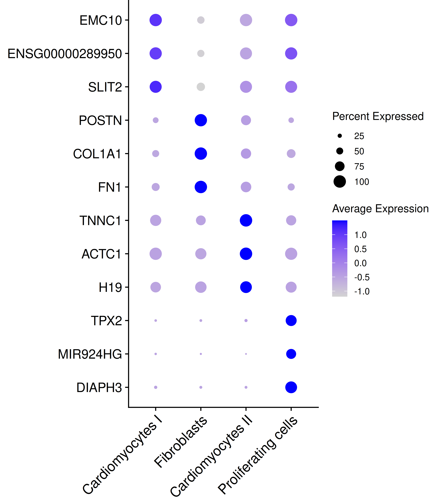
Markers_top5 <- as.data.frame(Markers %>% group_by(cluster) %>% top_n(n = 5, wt = avg_log2FC))
Idents(integrated) <- factor(integrated$cell_type, levels = rev(levels(integrated$cell_type)))
DotPlot(integrated, assay = "SCT", features = Markers_top5$gene, dot.scale = 5) +
RotatedAxis() +
theme(axis.title = element_blank(), axis.text.x = element_text(size = 12), axis.text.y = element_text(size = 13), legend.text = element_text(size = 9), legend.title = element_text(size = 11), plot.margin = unit(c(0, 0, 0, 0.1),
"inches"))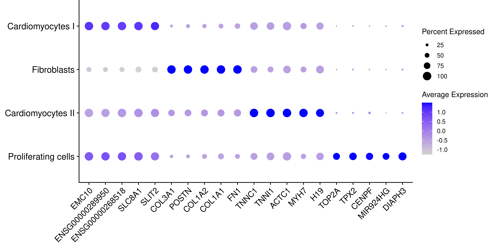
FeaturePlot_scCustom(integrated, features = c("EMC10", "COL3A1", "TNNC1", "TOP2A"), num_columns = 4)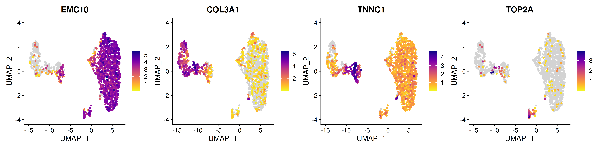
FeaturePlot_scCustom(integrated, features = c("nCount_RNA", "nFeature_RNA", "percent.mt", "percent.rp"), num_columns = 4)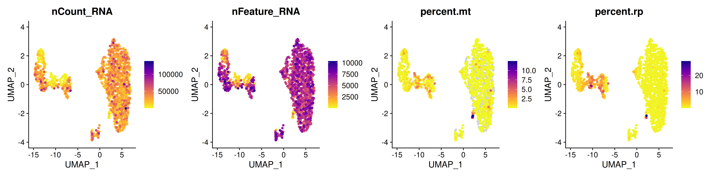
FeaturePlot_scCustom(integrated, features = c("RYR2", "FGF12", "COL1A1", "FN1", "VWF", "PECAM1", "MKI67", "TOP2A", "nCount_RNA", "nFeature_RNA", "percent.mt", "percent.rp"), num_columns = 4)
FeaturePlot_scCustom(integrated, features = c("RYR2", "FGF12", "COL1A1", "FN1", "VWF", "PECAM1", "MKI67", "TOP2A", "nCount_RNA", "nFeature_RNA", "percent.mt", "percent.rp"), num_columns = 4, order = F)
FeaturePlot_scCustom(integrated, features = c("VWF", "CDH5", "PECAM1", "CD34", "ESAM", "ANO2", "KDR", "FLT1", "RAMP2", "ENG", "ROBO4", "EMCN", "CD36", "SLC9A3R2"), num_columns = 4, order = F)
genes_score <- c("VWF", "CDH5", "PECAM1", "CD34", "ESAM", "ANO2", "KDR", "RAMP2", "ROBO4", "EMCN")
integrated <- AddModuleScore(
object = integrated,
features = list(genes_score),
name = "EC score"
)
integrated$`EC score` <- integrated$`EC score1`
integrated$`EC score1` <- NULL
FeaturePlot_scCustom(
integrated,
features = "EC score",
reduction = "umap",
order = F
)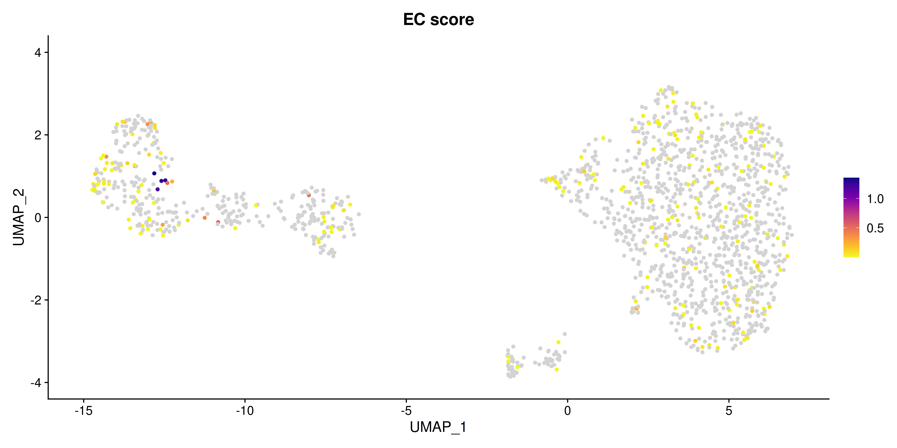
FeaturePlot_scCustom(
integrated,
features = "EC score",
reduction = "umap",
order = T, na_cutoff = 0.5,
split.by="Sample"
)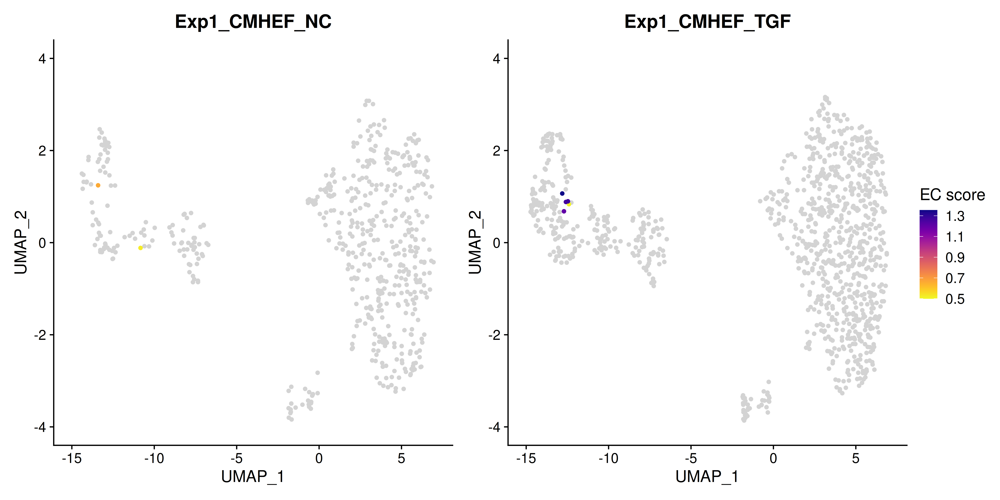
integrated[[]] %>%
mutate(EC_high = (`EC score` > 0.5)) %>%
group_by(Sample) %>%
summarise(
n_cells = n(),
n_EC_high = sum(EC_high, na.rm = TRUE),
frac_EC_high = n_EC_high / n_cells
)# A tibble: 2 × 4
Sample n_cells n_EC_high frac_EC_high
<chr> <int> <int> <dbl>
1 Exp1_CMHEF_NC 552 2 0.00362
2 Exp1_CMHEF_TGF 1029 5 0.00486DefaultAssay(integrated) <- "RNA"
Idents(integrated) <- "cell_type"
Markers <- FindAllMarkers(integrated, only.pos = TRUE, min.pct = 0.5, logfc.threshold = 0.5)
write.csv(Markers, here::here(output_dir_data, "MT_Markers_all_cell_type.csv"))
Markers_top10 <- as.data.frame(Markers %>% group_by(cluster) %>% top_n(n = 10, wt = avg_log2FC))
write.csv(Markers_top10, here::here(output_dir_data, "MT_Markers_top10_cell_type.csv"))
Markers_top3 <- as.data.frame(Markers %>% group_by(cluster) %>% top_n(n = 3, wt = avg_log2FC))
write.csv(Markers_top3, here::here(output_dir_data, "MT_Markers_top3_cell_type.csv"))df <- Markers[,7:6]
dfsample <- split(df$gene,df$cluster)
length(dfsample)[1] 4dfsample$`Cardiomyocytes I` = bitr(dfsample$`Cardiomyocytes I`, fromType="SYMBOL", toType="ENTREZID", OrgDb="org.Hs.eg.db")
dfsample$`Fibroblasts` = bitr(dfsample$`Fibroblasts`, fromType="SYMBOL", toType="ENTREZID", OrgDb="org.Hs.eg.db")
dfsample$`Cardiomyocytes II` = bitr(dfsample$`Cardiomyocytes II`, fromType="SYMBOL", toType="ENTREZID", OrgDb="org.Hs.eg.db")
dfsample$`Proliferating cells` = bitr(dfsample$`Proliferating cells`, fromType="SYMBOL", toType="ENTREZID", OrgDb="org.Hs.eg.db")
#do the same here, a line like below for each cluster
genelist <- list("Cardiomyocytes I" = dfsample$`Cardiomyocytes I`$ENTREZID,
"Fibroblasts" = dfsample$`Fibroblasts`$ENTREZID,
"Cardiomyocytes II" = dfsample$`Cardiomyocytes II`$ENTREZID,
"Proliferating cells" = dfsample$`Proliferating cells`$ENTREZID
)
# Calculate gene counts across cells
gene_counts <- rowSums(integrated@assays$RNA@counts > 0)
# Filter genes to include only those expressed in at least 3 cells
universe_genes <- names(gene_counts[gene_counts >= 3])
# Convert universe gene symbols to Entrez IDs
universe_entrez <- bitr(universe_genes, fromType = "SYMBOL", toType = "ENTREZID", OrgDb = org.Hs.eg.db)$ENTREZIDGO_MF <- compareCluster(geneCluster = genelist, fun = "enrichGO", ont = "ALL", OrgDb = "org.Hs.eg.db", universe = universe_entrez)
GO_MF <- gsfilter(GO_MF, by = 'Count', min = 3)
dotplot(GO_MF, label_format = 35, title = "GO Over-representation analysis") +
theme(axis.text.x = element_text(angle = 45, hjust = 1))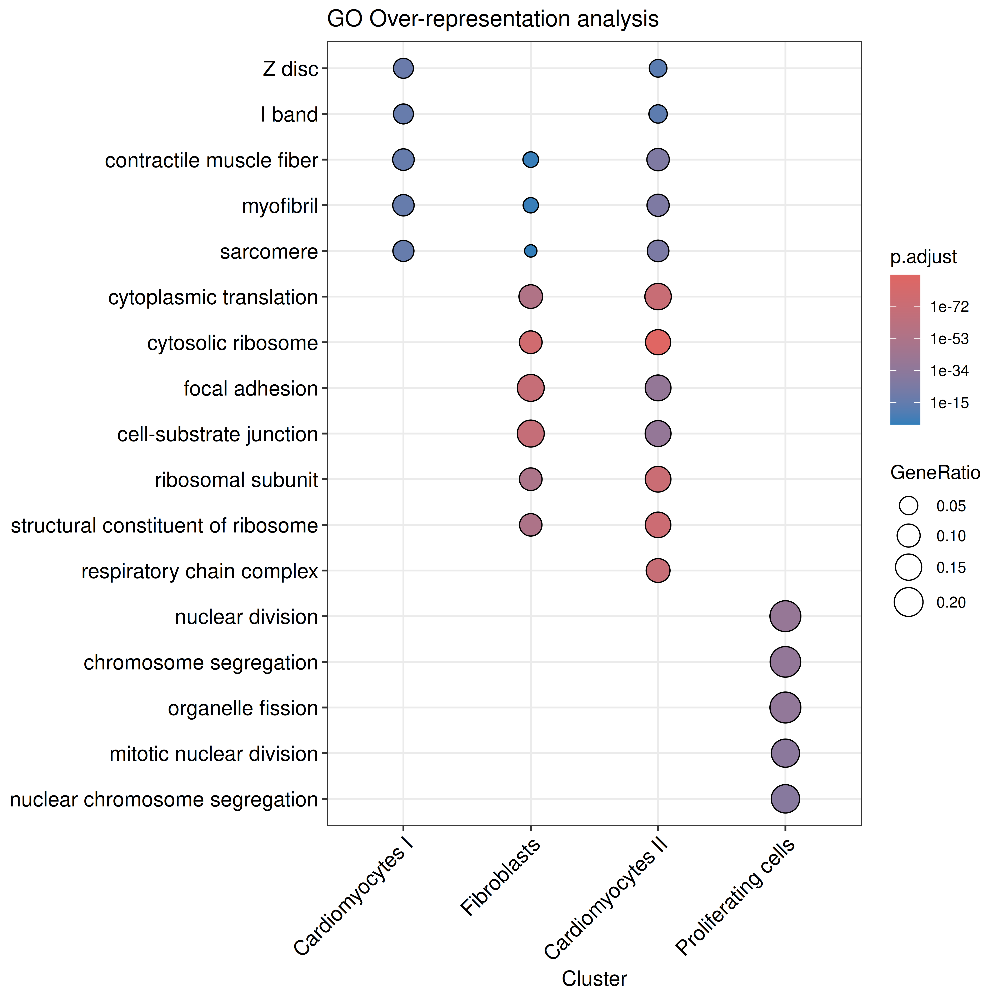
GO_MF_simplified <- clusterProfiler::simplify(
GO_MF,
cutoff = 0.7,
by = "p.adjust",
select_fun = min,
measure = "Wang",
semData = NULL
)
dotplot(GO_MF_simplified, label_format = 40, title = "Over-representation analysis") +
theme(axis.text.x = element_text(angle = 45, hjust = 1))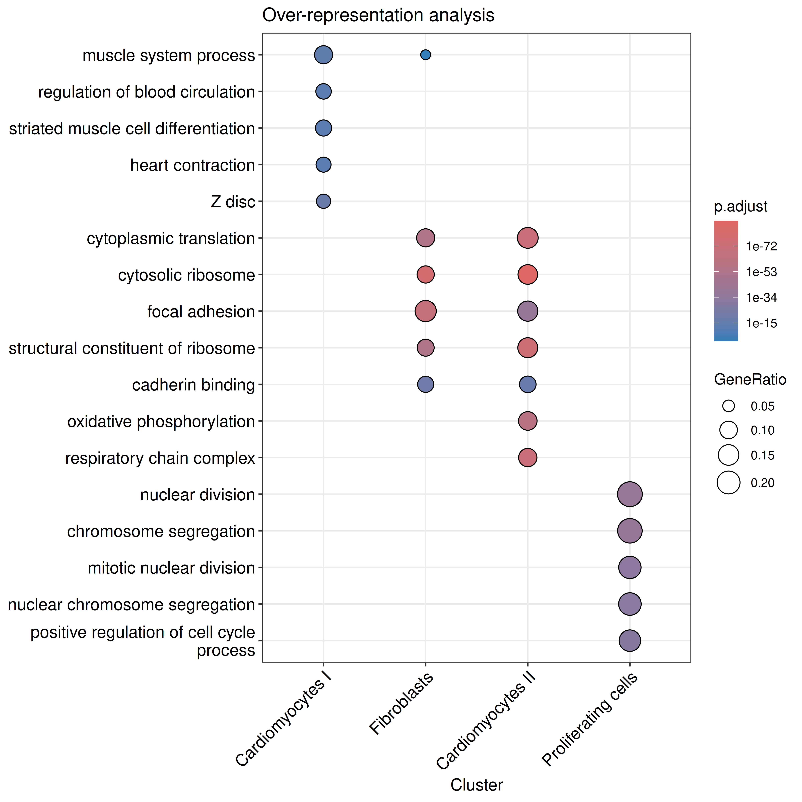
props <- getTransformedProps(
integrated$cell_type,
integrated$Sample,
transform = "logit"
)
df <- as.data.frame(props$Proportions) %>%
dplyr::rename(
cell_type = clusters,
Sample = sample,
Proportion = Freq
)
p <- ggplot(df, aes(x = Sample, y = Proportion, fill = cell_type)) +
geom_col(
width = 0.8,
color = "black", # black borders
linewidth = 0.5 # thin, publication-style
) +
scale_fill_manual(values = cluster_palette) +
labs(y = "Proportions", x = NULL) +
theme_classic(base_size = 15) +
theme(
axis.text.x = element_text(angle = 45, hjust = 1, vjust = 1, face = "bold"),
axis.title.y = element_text(face = "bold"),
legend.position = "right",
legend.title = element_blank()
)
p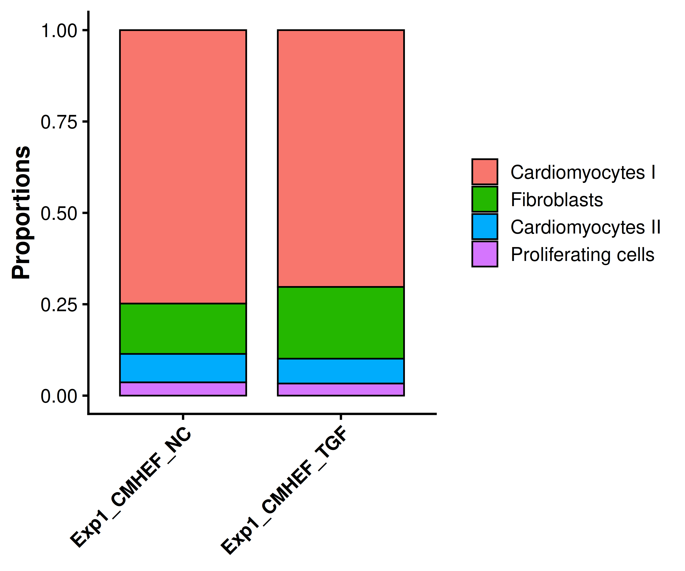
metadata <- integrated@meta.data
cell_type_sample_table <- table(metadata$cell_type, metadata$Sample)
cell_type_sample_df <- as.data.frame.matrix(cell_type_sample_table)
cell_type_sample_df["Total", ] <- colSums(cell_type_sample_df)
cell_type_sample_df$Total <- rowSums(cell_type_sample_df)
library(gridExtra)
library(grid)
table_plot <- tableGrob(cell_type_sample_df)
grid.newpage()
grid.draw(table_plot)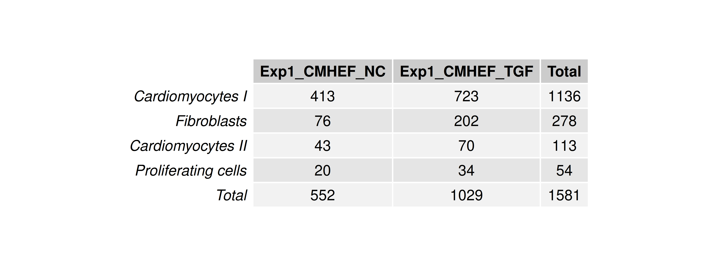
integrated@assays[["RAW"]] <- NULL
saveRDS(integrated,
here::here(output_dir_data, "MT.rds"))
sessionInfo()R version 4.5.2 (2025-10-31)
Platform: x86_64-pc-linux-gnu
Running under: Ubuntu 24.04.3 LTS
Matrix products: default
BLAS: /usr/lib/x86_64-linux-gnu/openblas-pthread/libblas.so.3
LAPACK: /usr/lib/x86_64-linux-gnu/openblas-pthread/libopenblasp-r0.3.26.so; LAPACK version 3.12.0
locale:
[1] LC_CTYPE=en_US.UTF-8 LC_NUMERIC=C
[3] LC_TIME=en_US.UTF-8 LC_COLLATE=en_US.UTF-8
[5] LC_MONETARY=en_US.UTF-8 LC_MESSAGES=en_US.UTF-8
[7] LC_PAPER=en_US.UTF-8 LC_NAME=C
[9] LC_ADDRESS=C LC_TELEPHONE=C
[11] LC_MEASUREMENT=en_US.UTF-8 LC_IDENTIFICATION=C
time zone: Etc/UTC
tzcode source: system (glibc)
attached base packages:
[1] grid stats4 stats graphics grDevices datasets utils
[8] methods base
other attached packages:
[1] edgeR_4.8.0 dorothea_1.22.0
[3] OmnipathR_3.18.2 decoupleR_2.16.0
[5] reactable_0.4.5 limma_3.66.0
[7] speckle_1.10.0 ReactomePA_1.54.0
[9] AnnotationHub_4.0.0 BiocFileCache_3.0.0
[11] dbplyr_2.5.1 gprofiler2_0.2.4
[13] harmony_1.2.4 Rcpp_1.1.0
[15] clustree_0.5.1 ggraph_2.2.2
[17] statmod_1.5.1 scater_1.38.0
[19] scuttle_1.20.0 Matrix.utils_0.9.7
[21] gridExtra_2.3 png_0.1-8
[23] pheatmap_1.0.13 reshape2_1.4.5
[25] lubridate_1.9.4 forcats_1.0.1
[27] stringr_1.6.0 purrr_1.2.0
[29] tidyr_1.3.1 tidyverse_2.0.0
[31] magrittr_2.0.4 scCustomize_3.2.2
[33] scDblFinder_1.24.0 Matrix_1.6-5
[35] DropletUtils_1.30.0 SingleCellExperiment_1.32.0
[37] SummarizedExperiment_1.40.0 GenomicRanges_1.62.0
[39] Seqinfo_1.0.0 MatrixGenerics_1.22.0
[41] matrixStats_1.5.0 SeuratObject_5.0.2
[43] Seurat_4.4.0 enrichplot_1.30.4
[45] org.Hs.eg.db_3.22.0 AnnotationDbi_1.72.0
[47] IRanges_2.44.0 S4Vectors_0.48.0
[49] Biobase_2.70.0 BiocGenerics_0.56.0
[51] generics_0.1.4 clusterProfiler_4.18.2
[53] scales_1.4.0 patchwork_1.3.2
[55] knitr_1.50 readxl_1.4.5
[57] readr_2.1.6 tibble_3.3.0
[59] ggplot2_4.0.1 dplyr_1.1.4
[61] here_1.0.2 workflowr_1.7.2
loaded via a namespace (and not attached):
[1] igraph_2.2.1 graph_1.88.0
[3] ica_1.0-3 plotly_4.11.0
[5] rematch2_2.1.2 tidyselect_1.2.1
[7] rvest_1.0.5 bit_4.6.0
[9] lattice_0.22-7 rjson_0.2.23
[11] blob_1.2.4 S4Arrays_1.10.1
[13] parallel_4.5.2 cli_3.6.5
[15] ggplotify_0.1.3 goftest_1.2-3
[17] BiocIO_1.20.0 glmGamPoi_1.22.0
[19] bluster_1.20.0 grr_0.9.5
[21] BiocNeighbors_2.4.0 uwot_0.2.4
[23] curl_7.0.0 mime_0.13
[25] evaluate_1.0.5 tidytree_0.4.6
[27] leiden_0.4.3.1 stringi_1.8.7
[29] backports_1.5.0 XML_3.99-0.20
[31] httpuv_1.6.16 paletteer_1.6.0
[33] rappdirs_0.3.3 splines_4.5.2
[35] bcellViper_1.46.0 logger_0.4.1
[37] sctransform_0.4.2 ggbeeswarm_0.7.3
[39] sessioninfo_1.2.3 DBI_1.2.3
[41] HDF5Array_1.38.0 jquerylib_0.1.4
[43] reactome.db_1.94.0 withr_3.0.2
[45] git2r_0.36.2 systemfonts_1.3.1
[47] rprojroot_2.1.1 xgboost_3.1.2.1
[49] lmtest_0.9-40 ggnewscale_0.5.2
[51] tidygraph_1.3.1 rtracklayer_1.70.0
[53] BiocManager_1.30.27 htmlwidgets_1.6.4
[55] fs_1.6.6 ggrepel_0.9.6
[57] labeling_0.4.3 SparseArray_1.10.4
[59] cellranger_1.1.0 h5mread_1.2.1
[61] reticulate_1.44.1 zoo_1.8-14
[63] XVector_0.50.0 UCSC.utils_1.6.0
[65] RhpcBLASctl_0.23-42 timechange_0.3.0
[67] data.table_1.17.8 ggtree_4.0.1
[69] rhdf5_2.54.0 R.oo_1.27.1
[71] ggiraph_0.9.2 irlba_2.3.5.1
[73] ggrastr_1.0.2 gridGraphics_0.5-1
[75] lazyeval_0.2.2 yaml_2.3.11
[77] survival_3.8-3 scattermore_1.2
[79] BiocVersion_3.22.0 crayon_1.5.3
[81] RcppAnnoy_0.0.22 RColorBrewer_1.1-3
[83] progressr_0.18.0 tweenr_2.0.3
[85] later_1.4.4 ggridges_0.5.7
[87] codetools_0.2-20 GlobalOptions_0.1.3
[89] KEGGREST_1.50.0 Rtsne_0.17
[91] shape_1.4.6.1 gdtools_0.4.4
[93] Rsamtools_2.26.0 filelock_1.0.3
[95] pkgconfig_2.0.3 xml2_1.5.1
[97] spatstat.univar_3.1-5 GenomicAlignments_1.46.0
[99] getPass_0.2-4 aplot_0.2.9
[101] spatstat.sparse_3.1-0 ape_5.8-1
[103] viridisLite_0.4.2 xtable_1.8-4
[105] plyr_1.8.9 httr_1.4.7
[107] tools_4.5.2 globals_0.18.0
[109] beeswarm_0.4.0 checkmate_2.3.3
[111] nlme_3.1-168 hdf5r_1.3.12
[113] digest_0.6.39 farver_2.1.2
[115] tzdb_0.5.0 yulab.utils_0.2.2
[117] viridis_0.6.5 glue_1.8.0
[119] cachem_1.1.0 polyclip_1.10-7
[121] Biostrings_2.78.0 parallelly_1.45.1
[123] ScaledMatrix_1.18.0 fontBitstreamVera_0.1.1
[125] pbapply_1.7-4 httr2_1.2.1
[127] tcltk_4.5.2 spam_2.11-1
[129] gson_0.1.0 dqrng_0.4.1
[131] utf8_1.2.6 graphlayouts_1.2.2
[133] shiny_1.12.0 tidydr_0.0.6
[135] R.utils_2.13.0 rhdf5filters_1.22.0
[137] RCurl_1.98-1.17 memoise_2.0.1
[139] rmarkdown_2.30 R.methodsS3_1.8.2
[141] future_1.68.0 RANN_2.6.2
[143] fontLiberation_0.1.0 renv_1.1.5
[145] spatstat.data_3.1-9 rstudioapi_0.17.1
[147] cluster_2.1.8.1 whisker_0.4.1
[149] janitor_2.2.1 spatstat.utils_3.2-0
[151] hms_1.1.4 fitdistrplus_1.2-4
[153] cowplot_1.2.0 colorspace_2.1-2
[155] rlang_1.1.6 GenomeInfoDb_1.46.1
[157] DelayedMatrixStats_1.32.0 sparseMatrixStats_1.22.0
[159] dotCall64_1.2 ggforce_0.5.0
[161] circlize_0.4.16 ggtangle_0.0.9
[163] xfun_0.54 abind_1.4-8
[165] GOSemSim_2.36.0 treeio_1.34.0
[167] Rhdf5lib_1.32.0 bitops_1.0-9
[169] ps_1.9.1 promises_1.5.0
[171] scatterpie_0.2.6 RSQLite_2.4.5
[173] qvalue_2.42.0 fgsea_1.36.0
[175] DelayedArray_0.36.0 GO.db_3.22.0
[177] compiler_4.5.2 prettyunits_1.2.0
[179] beachmat_2.26.0 graphite_1.56.0
[181] listenv_0.10.0 fontquiver_0.2.1
[183] BiocSingular_1.26.1 tensor_1.5.1
[185] MASS_7.3-65 progress_1.2.3
[187] BiocParallel_1.44.0 spatstat.random_3.4-3
[189] R6_2.6.1 fastmap_1.2.0
[191] fastmatch_1.1-6 vipor_0.4.7
[193] ROCR_1.0-11 rsvd_1.0.5
[195] gtable_0.3.6 KernSmooth_2.23-26
[197] miniUI_0.1.2 deldir_2.0-4
[199] htmltools_0.5.9 bit64_4.6.0-1
[201] spatstat.explore_3.6-0 lifecycle_1.0.4
[203] ggprism_1.0.7 S7_0.2.1
[205] zip_2.3.3 processx_3.8.6
[207] callr_3.7.6 restfulr_0.0.16
[209] sass_0.4.10 vctrs_0.6.5
[211] spatstat.geom_3.6-1 snakecase_0.11.1
[213] DOSE_4.4.0 scran_1.38.0
[215] ggfun_0.2.0 sp_2.2-0
[217] future.apply_1.20.0 bslib_0.9.0
[219] pillar_1.11.1 metapod_1.18.0
[221] locfit_1.5-9.12 otel_0.2.0
[223] jsonlite_2.0.0 cigarillo_1.0.0